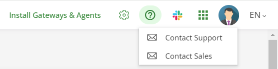

Running AppControl Locally with Docker Compose
This package lets you install and run Invivoo's X4B AppControl software locally on a Windows PC. To install X4B AppControl in standalone under Windows OS, unzip the following file into an installation directory, and move into that directory.
AppControl License and Usage Terms
AppControl is free to use for educational purposes. For production use, please contact Invivoo.
Installing AppControl Locally
The AppControl software is delivered as a set of container images, meant to be run inside a container orchestrator such as Kubernetes or Red Hat's OpenShift. Invivoo provides Helm charts for this installation, which is the recommended deployment method for production environments.
For a newcomer discovering AppControl for the first time, Invivoo is providing this deployment method, using Docker Compose, to make it easy to quickly set up an AppControl instance locally, on your laptop, and immediately start exploring its possibilities.
AppControl includes a gateway and agents that will let you manage any system, local or remote, from this local instance. Conversely, remote workstations will also be able to access and use this instance, meaning the AppControl web-based UI will be accessible from every machine on your network.
Note that this setup is NOT recommended for production deployments.
Requirements
You will need Docker Desktop on your PC. Invivoo recommends choosing WSL 2 over Hyper-V for the Linux virtualization (see installation instructions below).
You will need at least 16 Gb of RAM and 5 Gb of available disk space.
Installation Instructions
Docker Desktop
To install the latest version of Docker Desktop, follow the instructions on their website.
In the System Requirements section, choose WSL 2 backend, and follow the instructions from Microsoft to enable the feature and install WSL.
AppControl with Docker Compose
Docker Compose is a tool for defining and running multi-container Docker
applications. Invivoo provides the appcontrol.yml file to configure
AppControl's services. This lets you create and start all the services with a
single command.
Make sure that Docker Desktop is started. Open a command line tool (a normal one, administrator rights are not required), and run the following command:
docker-compose -f appcontrol.yml -f appcontrol-images.yml up -d
The command will start by retrieving all the required container images from
Invivoo's DockerHub repository, this may
take a few minutes. After that, the containers are started with the docker
run command. Subsequent runs will reuse the locally-stored images.
When the command has finished executing, you should see an output similar to this:
- Network appcontrol-compose_default Created 0.8s
- Container appcontrol-compose-rabbit-1 Started 8.4s
- Container appcontrol-compose-gateway-1 Started 8.5s
- Container appcontrol-compose-agentdebian-1 Started 8.9s
- Container appcontrol-compose-login-1 Started 8.9s
- Container appcontrol-compose-sql-1 Started 9.0s
- Container appcontrol-compose-redis-1 Started 8.3s
- Container appcontrol-compose-webapp-1 Started 8.8s
- Container appcontrol-compose-notification-1 Started 12.6s
- Container appcontrol-compose-api-1 Started 15.8s
- Container appcontrol-compose-configvalidator-1 Started 12.2s
- Container appcontrol-compose-agentmanager-bridge-1 Started 15.3s
- Container appcontrol-compose-dbaccess-1 Started 13.7s
- Container appcontrol-compose-scheduler-1 Started 14.5s
- Container appcontrol-compose-launcher-1 Started 14.8s
- Container appcontrol-compose-launcher-dispatcher-1 Started 10.3s
- Container appcontrol-compose-statistics-1 Started 14.4s
- Container appcontrol-compose-agentmanager-1 Started 15.2s
- Container appcontrol-compose-agentstatus-1 Started 15.3s
- Container appcontrol-compose-apps-1 Started 17.3s
- Container appcontrol-compose-authentication-1 Started 21.0s
The AppControl services are up and running.
Using the Web Interface
In your web browser, navigate to http://localhost:4000 to access the AppControl webapp. Use the following credentials to login:
- login:
admin - password:
KoordinatorAdmin
Getting Help
Once you're logged into AppControl, you can access the online documentation through the help button (?) on the top right of the screen:

The dropdown menu also lets you contact Invivoo support through email, and join our Slack channel for access to the development team.
Test AppControl with the Helloworld map
The installation package includes a sample AppControl map to help you get
started. In the webapp, import the sample map by clicking on the New
application button and uploading the file called hellowworld,v1.xml.
Here's a tutorial video to help you get started: Helloworld tutorial
Stop / Uninstall AppControl
Run the following command to stop AppControl:
docker-compose -f appcontrol.yml -f appcontrol-images.yml stop
If you want to start again, run the following command:
docker-compose -f appcontrol.yml -f appcontrol-images.yml up -d
To completely remove AppControl, run the following command:
docker-compose -f appcontrol.yml -f appcontrol-images.yml rm